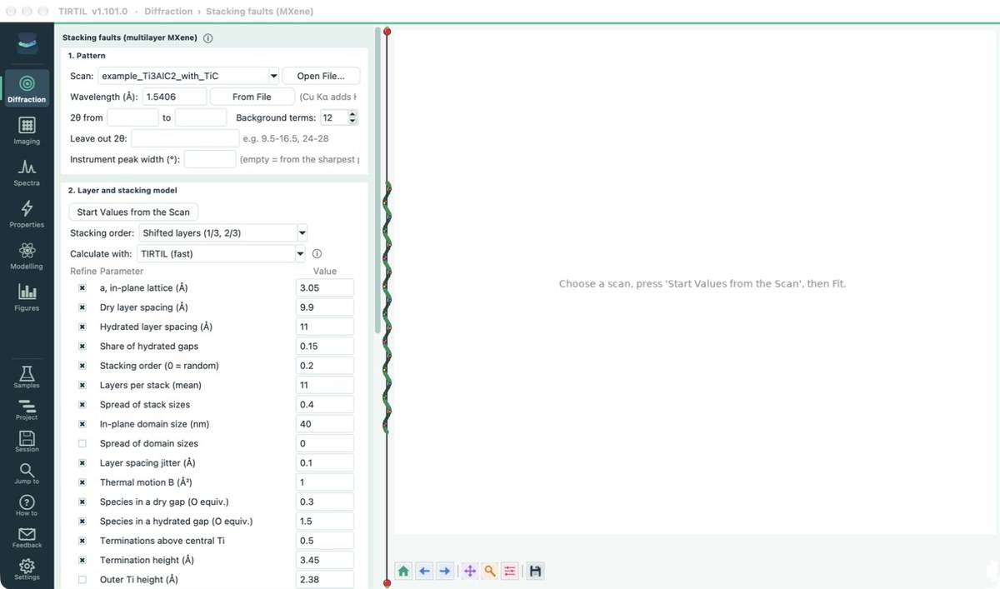
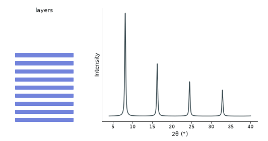

Diffraction
Stacking faults
How ordered the MXene layers are.

Steps
Open File...Open a scan with the MXene (00l) peaks.Start Values from the ScanStart values come from the scan: the layer spacing from (002).Fit: a DIFFaX-style model with fault probabilities fits the peak shapes and tails.Fit Several Scans...Fit a whole series, then plot the fault fraction against temperature.
How it works

Worked example
Sharp (00l) peaks with a tail on one side mean some layers have a different spacing (water or an intercalant). A fault probability of 0.2 is about 1 layer in 5.
In TIRTIL: How to (⌘/) › Try It With Example Data loads this example.